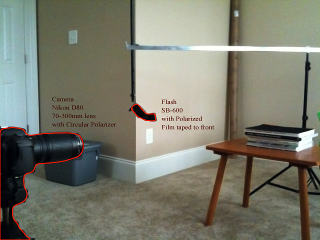
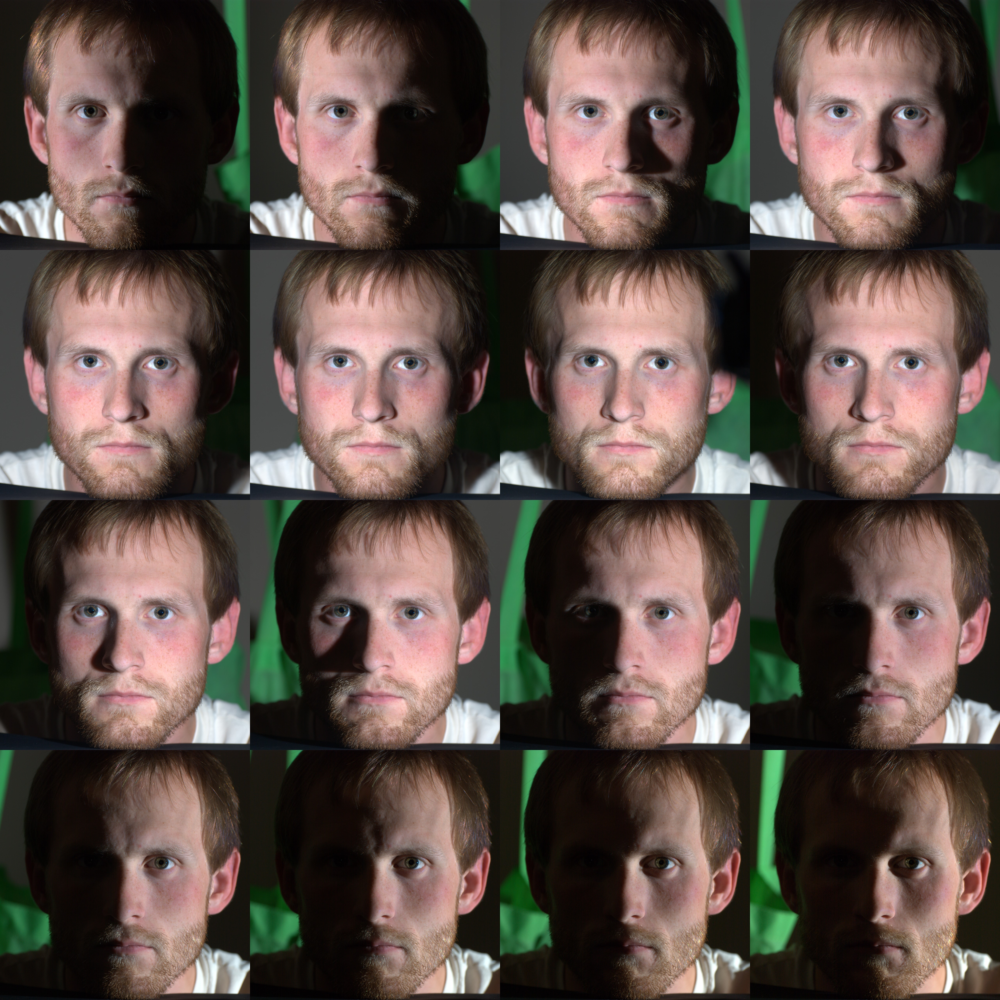
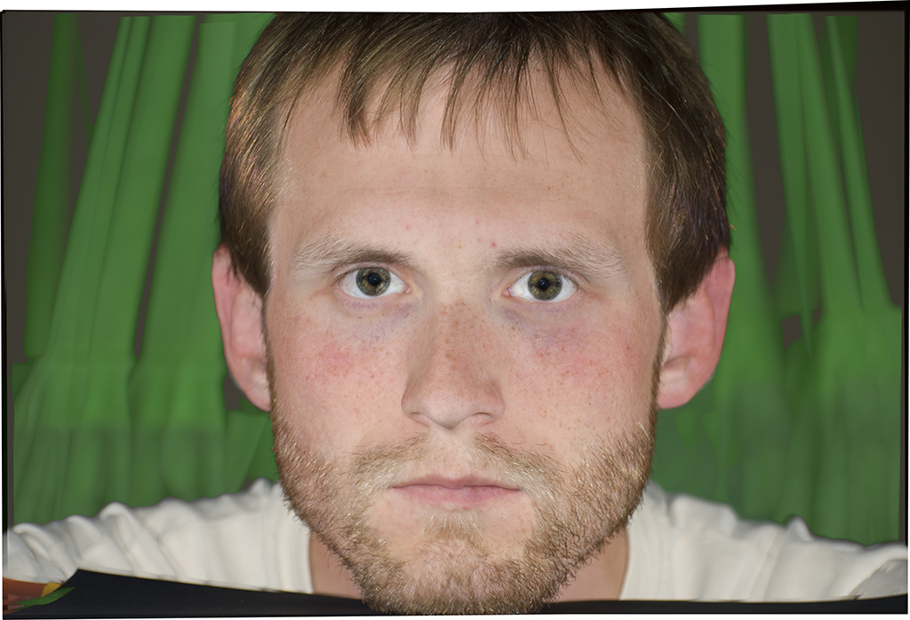
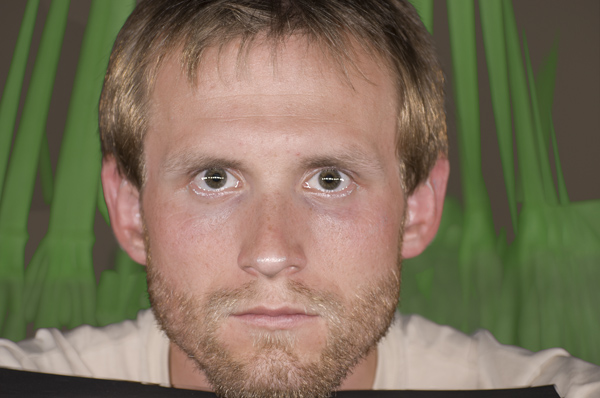
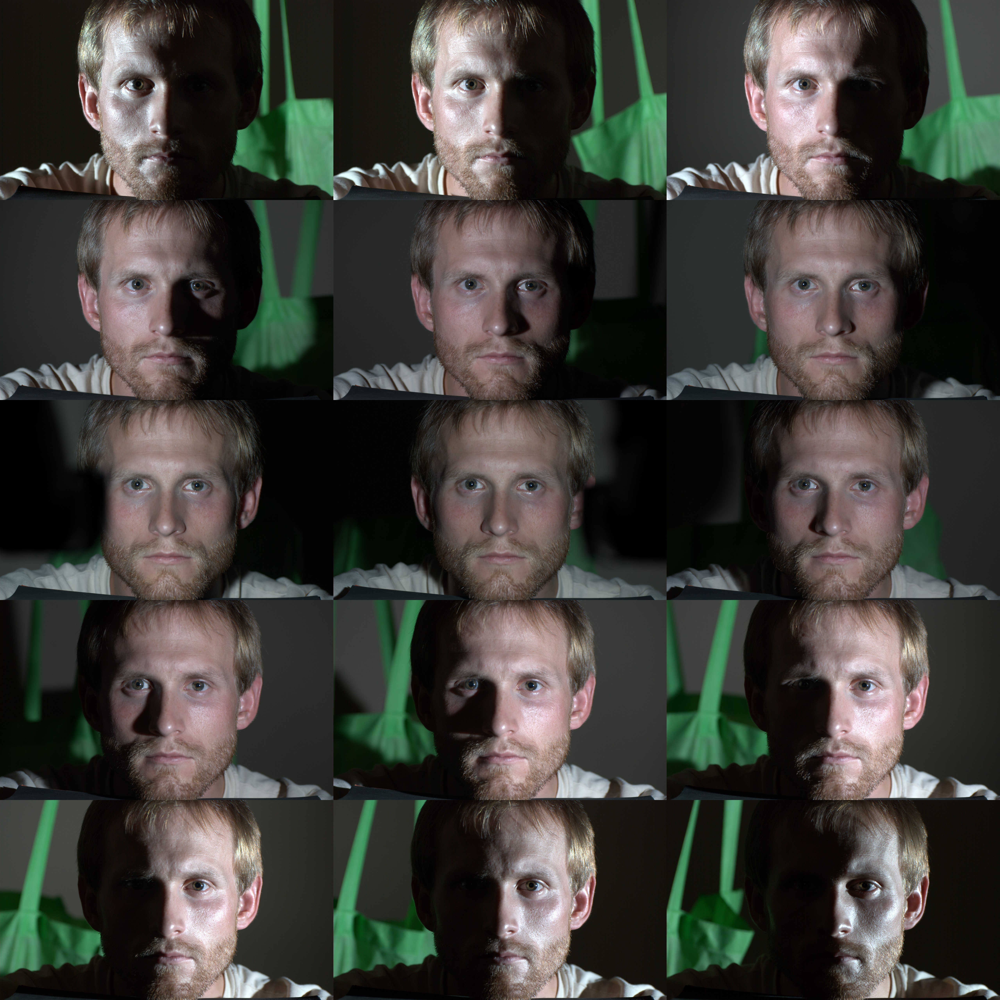
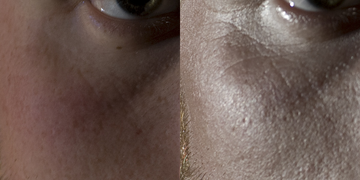
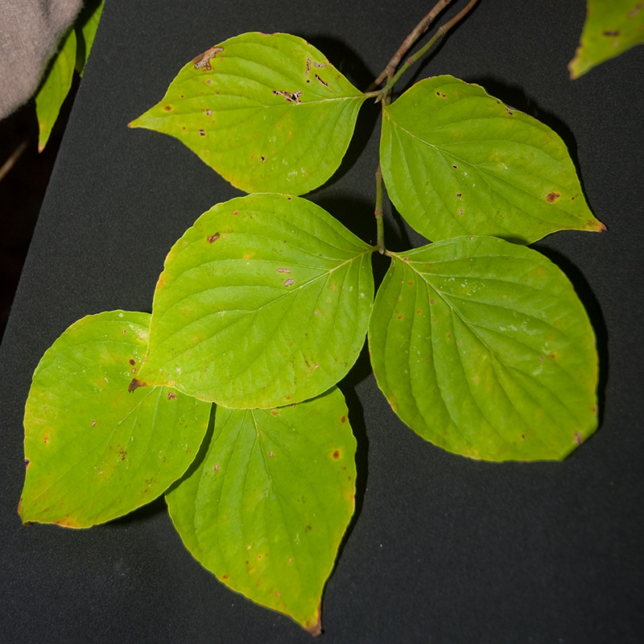

Taking Better Photos for Textures
Overview
Most photos taken for the purpose of using as a texture contain some elements of directional lighting as well as perspective and light Dependant variables such as specular highlights. The methods outlined in this document were developed as a cheap and easy way of capturing pure surface color information. The examples given below are used for photographing a head, simpler methods could be used for photographing flat objects such as plants, walls, floors etc.
Setup
To remove the directional lighting component I decided to use a lighting rig that could rotate a light around a face without changing distance so that the amount of light hitting the surface would remain the same. To remove the specular component I used a method of lighting called cross-polarization. This is where the light source and the lens are polarized but the direction of polarization is perpendicular to each other.
The lighting and camera rig used was a Nikon D80 with a 70-300mm lens on a tripod. The lens had a circular polarizer. The flash was a Nikon SB-600 with polarized film oriented perpendicular to the direction of the circular polarizer. The flash was suspended from an aluminum tube using a plastic rod. The aluminum tube pivoted on a light stand placed close behind the head of the subject. Since the flash was in such close range I was able to shoot it at 1/8 power which allowed me to take around 17 photos in less than a minute.

Results
These are the 16 photos taken in a 180 degree arc.

These photos are aligned and blended in photoshop using the blend mode Lighten which returns max(x,y). The result is the brightest pixel from each image, eliminating shadows. Some touch up is required to the eye areas as they still get a faint specular highlight so erasing the highlight from each image is required. The result is an image of the face with very little directional lighting and no specular highlights.

Below is a combination of similar photos but without polarization, here you can see why polarization is required.

Below are 15 images taken with the lens polarizer rotated 90 degrees which places it in parallel with the light. This shows lighting that is directly reflected from the surface. All images were taken using the same exposure and white balance yet when the light is at a glancing angle you see more specular response and the color is closer to the color of the light. This is expected but it's pretty interesting to see it in practice.

Another interesting observation is the difference in the appearance of details between parallel polarization and cross polarization. The specular light reflected reveals much finer details than the diffuse and scattering component of the cross polarized image. The parallel polarization images aren't very useful for creating textures but they reveal a lot about making shaders for representing skin.

Other Uses
When photographing something relativly flat such as a wall, floor, leaves etc. You can mount the flash on the camera and get decent results from one photo that contain nondirectional lighting with no specularity.

Important!
You are viewing documentation for the Unreal Development Kit (UDK).
If you are looking for the Unreal Engine 4 documentation, please visit the Unreal Engine 4 Documentation site.